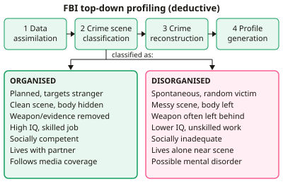

A-level Psychology Year 13 · Topic 14
Forensic psychology
Forensic psychology applies psychology to crime, from catching offenders to explaining and dealing with offending.
We will compare top down and bottom up offender profiling, then biological and psychological explanations of offending.
Finally we evaluate ways of dealing with offenders, including custody, token economies, anger management and restorative justice.
- 8 subtopics
- 223 questions
- Free: 14.1 notes and 10 questions
In this topic
- 14.1Offender profiling: top-down approach and the FBI typologiesFree below · 24 questions
- 14.2Offender profiling: bottom-up approach, investigative psychology and geographical profilingOpen in Full Marks · 28 questions
- 14.3Biological explanations of offending: atavistic form, genetics and neural explanationsOpen in Full Marks · 21 questions
- 14.4Psychological explanations: Eysenck's theory and cognitive distortions (hostile attribution, minimalisation)Open in Full Marks · 35 questions
- 14.5Differential association theory and psychodynamic explanations of offendingOpen in Full Marks · 23 questions
- 14.6Dealing with offending: aims of custody, effects of imprisonment and recidivismOpen in Full Marks · 34 questions
- 14.7Behaviour modification in custody (token economy) and anger management programmesOpen in Full Marks · 31 questions
- 14.8Restorative justice programmesOpen in Full Marks · 27 questions
14.1 · Free notes
Offender profiling: top-down approach and the FBI typologies

Key points
- Offender profiling is a behavioural investigative technique. It uses crime scene evidence to predict an offender's likely characteristics (such as age, occupation, relationships and lifestyle) so that police can narrow the suspect list.
- The top-down approach was developed by the FBI Behavioural Science Unit at Quantico, USA. It begins with a pre-existing typology and fits the crime scene evidence into it. It is deductive, in contrast with the data-driven bottom-up approach.
- The typologies came from Ressler, Burgess and Douglas (1986). They interviewed 36 convicted sexually motivated murderers and combined the interviews with crime scene and victim data.
- The FBI process has four stages: data assimilation (crime scene photos, pathology and victim background), crime scene classification (organised or disorganised), crime reconstruction (the sequence of events and the victim's behaviour) and profile generation (offender characteristics, motive and likely behaviour).
- The organised offender plans the crime and targets a stranger, often luring the victim. The scene is controlled and clean, the body is hidden, and the weapon and evidence are removed. The offender is typically of high intelligence, socially and sexually competent, in skilled work, living with a partner and following the case in the media.
- The disorganised offender acts spontaneously and attacks at random. The scene is messy, the body is left in view and the weapon is often left behind. The offender is typically of lower IQ, socially inadequate, in unskilled work, living alone near the scene and may have a history of mental disorder.
- A mixed category was later added for crime scenes that show both organised and disorganised features. This shows that the original dichotomy was too simple.
- Strength: the approach gives police a quick, structured framework for violent crimes such as serial murder and rape. In Copson's (1995) survey, 82% of police said profiles were operationally useful.
- Weakness (usefulness): in the same survey profiles were judged to have helped solve the case in only about 14% of cases, and led to the offender being identified in under 3%. Profiles are often vague and can fit many suspects (Barnum effect), so they are hard to falsify.
- Weakness (sample): the typologies were built from 36 American men using self-report interviews. The sample is small, unrepresentative and not generalisable to other crimes, cultures or female offenders. Self-report data may be unreliable.
- Weakness (validity): Canter et al. (2004) analysed 100 US serial murders with smallest space analysis. They found no distinct organised and disorganised subtypes. Many organised features were common to most offences, so the typology lacks empirical support.
- Weakness (situational factors): behaviour varies with the victim and the situation. The typologies assume offenders behave consistently, which ignores situational variation and personality. For AO3, compare with the bottom-up approach, which is more empirical.
In more detail
- Worked organised example: a victim is lured from a car park, the body is hidden and no weapon is found → organised offender, likely socially competent, employed and with a car.
- Worked disorganised example: a sudden attack near the offender's home with the weapon left at the scene → disorganised offender, likely living alone nearby and socially isolated.
- Testing the Barnum effect: Alison et al. (2003) found police officers rated a vague profile as accurate whether it was compared with the real offender or a made-up one.
- Best use: the FBI approach suits crimes with rich crime-scene information, such as murder and rape, rather than burglary or theft.
Practice
Offender profiling: top-down approach and the FBI typologies: 10 questions
Pick an answer to check it, or open the answer for the explanation.
1. Which best describes the top-down approach to offender profiling?
- Statistical analysis of many crimes to build a profile from the data up
- Fitting crime scene evidence into a pre-existing offender typology
- Interviewing the victim to learn the offender's personality
- Mapping crime locations to find the offender's home base
Show answer
B: Fitting crime scene evidence into a pre-existing offender typology. Top-down profiling starts with a ready-made typology (organised or disorganised) and fits the evidence to it. It is deductive, unlike the data-driven bottom-up approach.
2. The FBI typologies were developed from interviews with how many convicted offenders?
- 184
- 100
- 36
- 12
Show answer
C: 36. Ressler, Burgess and Douglas (1986) interviewed 36 sexually motivated murderers. 100 was Canter et al.'s later sample and 184 was Copson's police survey.
3. A stranger is lured and killed, the body is hidden, the weapon is removed and there are no forensic traces. Which profile would an FBI profiler predict?
- Unplanned attack by someone the victim knew well
- Impulsive, sexually inadequate, history of mental illness
- Lives alone near the scene with no work history
- Socially competent, high IQ, lives with a partner
Show answer
D: Socially competent, high IQ, lives with a partner. Planning, control and a hidden body indicate an organised offender. These are typically of high intelligence, socially competent, in skilled work and living with a partner.
4. A victim is attacked suddenly, killed with an object found at the scene and left where she fell. Which characteristic fits the disorganised type?
- Follows the case in the media and takes trophies
- Skilled employment and a stable relationship
- Lives alone close to the crime scene
- High intelligence and good social skills
Show answer
C: Lives alone close to the crime scene. A spontaneous attack with a weapon of opportunity and an untidy scene suggests a disorganised offender, typically living alone near the scene, in unskilled work and socially inadequate.
5. What is the correct order of the four stages of FBI profiling?
- Crime reconstruction, data assimilation, classification, profile generation
- Data assimilation, classification, reconstruction, profile generation
- Data assimilation, reconstruction, classification, profile generation
- Classification, data assimilation, profile generation, reconstruction
Show answer
B: Data assimilation, classification, reconstruction, profile generation. Evidence is first gathered (data assimilation), then the crime is classified, the events are reconstructed, and finally the offender profile is generated.
6. Canter et al. (2004) analysed 100 US serial murders. What did they find about the organised/disorganised typology?
- Disorganised offenders outnumbered organised ones three to one
- No clear subtypes; many organised features were common to most offences
- Almost all offences fitted one type neatly
- Organised features appeared only in a killer's first murder
Show answer
B: No clear subtypes; many organised features were common to most offences. Smallest space analysis showed no distinct organised and disorganised groups. Several organised-type behaviours were common to most offences, challenging the dichotomy.
7. Which is a valid criticism of the evidence base for the FBI typologies?
- It was based on female offenders only
- It used a large random sample of UK offenders
- It used a small sample of 36 mostly American sexual murderers, using self-report
- It relied only on statistical analysis of police files
Show answer
C: It used a small sample of 36 mostly American sexual murderers, using self-report. The sample was small, unrepresentative and drawn from self-report interviews, so the typologies may be unreliable and cannot be generalised to other offenders or crimes.
8. Copson (1995) found 82% of police rated profiles as useful but only 14% said they helped identify the offender. What is the best conclusion?
- Profiles are seen as useful but rarely lead directly to identification
- Profiles are worthless to detectives
- Police overestimate how often profiles are wrong
- Profiles identify most offenders
Show answer
A: Profiles are seen as useful but rarely lead directly to identification. The gap between 82% (useful) and 14% (helped identify) suggests profiles help in other ways, such as focusing the enquiry, but rarely identify the offender directly.
9. For which type of crime was the FBI top-down approach originally designed?
- Serial sexual murder and rape
- Dangerous driving
- Fraud and forgery
- Shoplifting by teenagers
Show answer
A: Serial sexual murder and rape. The typologies came from interviews with sexually motivated murderers, so the approach suits violent crimes with rich behavioural evidence at the scene.
10. Which statement about the top-down approach is correct?
- It was developed by the FBI's Behavioural Science Unit at Quantico
- It relies on smallest space analysis
- It was developed by Canter at the University of Liverpool
- It is inductive and builds categories from the data
Show answer
A: It was developed by the FBI's Behavioural Science Unit at Quantico. The top-down approach is American, from the FBI Behavioural Science Unit. Canter, Liverpool and smallest space analysis belong to the bottom-up approach.
Keep going in Full Marks
Full Marks has 24 questions on Offender profiling: top-down approach and the FBI typologies (14 more than here), set out in practice levels. You also get notes and 3D models for all 8 subtopics of Forensic psychology, plus games, timed exams and past papers.
On your exam board
- AQATopic 9: Forensic psychology
- OCRTopic 3: Option: Criminal psychology
- EdexcelTopic 6A: Option: Criminological psychology
Not in the Cambridge specification.